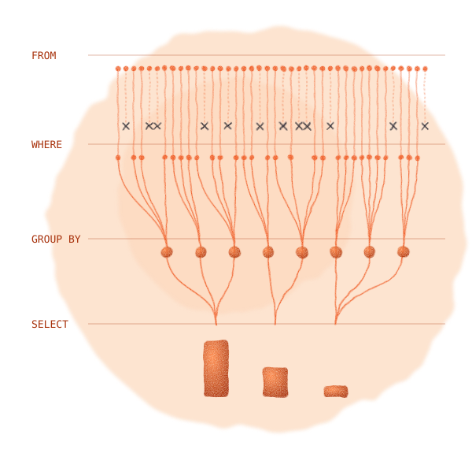

Aprenda a transformar dados em respostas para decisões do dia a dia.
Para quem domina planilhas e nunca programou. Cada consulta do livro foi executada em PostgreSQL 18.4 e DuckDB 1.5.6, com resultados idênticos.
Quero o e-book por R$ 49,90PDF de 111 páginas · Acesso imediato · Pagamento seguro pela Hotmart · Garantia de 7 dias

Explicar tabelas, chaves e granularidade: o que cada linha representa.
Ler uma consulta e prever o resultado antes de executar.
Escrever consultas com filtros, agrupamentos, JOINs, CTEs e subconsultas.
Calcular receita mensal, ticket médio, mediana e participação por categoria.
Reconhecer erros que distorcem indicadores e conferir um número antes de enviá-lo.
Falar a língua das equipes de dados e adaptar a consulta ao banco da sua empresa.
Basta saber usar planilhas: filtrar uma coluna, somar um intervalo, montar uma tabela dinâmica. Cada termo técnico é explicado no primeiro uso e aparece também no glossário.
Do contexto da linguagem à prática com respostas comentadas. Os capítulos seguem uma ordem crescente: cada um usa o que o anterior ensinou.
Que perguntas o SQL responde, SGBD, dialetos e a origem da linguagem.
Tabelas, chaves, granularidade, NULL e as definições dos indicadores.
SELECT, WHERE, ORDER BY, agregações, GROUP BY e HAVING.
JOINs, CASE, COALESCE, texto, datas, CTEs e subconsultas.
Receita por mês, produtos, ticket médio, clientes inativos, regiões e categorias.
Nove armadilhas que devolvem um número plausível, e errado.
Consultas leves, índices, EXPLAIN, exploração de bases e entrevistas.
Dez exercícios em dificuldade crescente, com respostas comentadas.
Folha de consulta, diferenças entre 8 bancos, glossário e o script da base de prática.
Cada caso segue o mesmo roteiro: pergunta de negócio, consulta, resultado e uma leitura que separa o que os dados mostram do que ainda é hipótese.
Em 111 páginas, você aprende a escrever as consultas que respondem perguntas reais do negócio e a evitar os nove erros que mudam decisões sem ninguém perceber.
Quero o e-book por R$ 49,90PDF de 111 páginas · Pagamento seguro pela Hotmart · Garantia de 7 dias